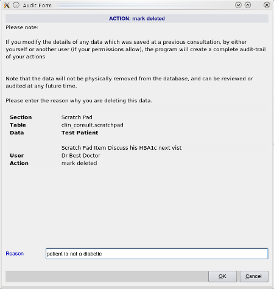

|  |
- The following information will always be supplied:
- The current user who is undertaking the action - yourself
- The patient's name
- The type of action eg Deletion
- The data being changed or deleted
- The Reason for the action must then be supplied by the user, or the action cancelled.
|